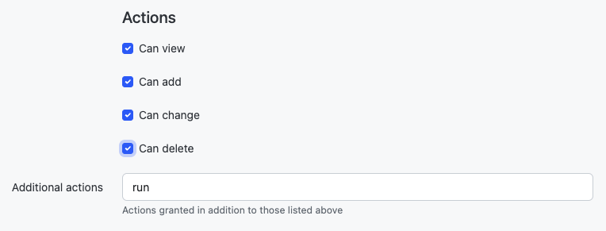

사용자 정의 스크립트
사용자 정의 스크립팅은 사용자가 NetBox UI 내에서 사용자 정의 로직을 실행할 수 있는 방법을 제공하기 위해 도입되었습니다. 사용자 정의 스크립트를 통해 사용자는 규정된 방식으로 NetBox 데이터를 직접 편리하게 조작할 수 있습니다. 다음과 같은 다양한 작업을 수행하는 데 사용할 수 있습니다:
- 새 사이트 배포 준비를 위해 새 장비와 케이블을 자동으로 채우기
- 새 예약 프리픽스 또는 IP 주소 범위 생성
- 외부 소스에서 데이터를 가져와 NetBox에 가져오기
- 유효하지 않거나 불완전한 데이터가 있는 객체 업데이트
또한 NetBox 내 데이터의 무결성을 검증하는 메커니즘으로도 사용할 수 있습니다. 스크립트 작성자는 특정 규칙과 조건에 대해 객체를 확인하는 테스트를 정의할 수 있습니다. 예를 들어, 다음을 확인하는 스크립트를 작성할 수 있습니다:
- 모든 탑 오브 랙 스위치에 콘솔 연결이 있는지
- 모든 라우터에 IP 주소가 할당된 루프백 인터페이스가 있는지
- 각 인터페이스 설명이 표준 형식을 준수하는지
- 모든 사이트에 최소한의 VLAN 세트가 정의되어 있는지
- 모든 IP 주소에 상위 프리픽스가 있는지
사용자 정의 스크립트는 NetBox 코드 베이스 외부에 존재하는 Python 코드이므로 핵심 NetBox 설치를 방해하지 않고 업데이트하고 변경할 수 있습니다. 또한 완전히 사용자 정의되므로 스크립트가 수행할 수 있는 작업에 본질적인 제한이 없습니다.
신뢰할 수 있는 스크립트만 설치하세요
사용자 정의 스크립트는 데이터베이스의 모든 것을 변경할 수 있는 제한 없는 접근 권한을 가지며 본질적으로 안전하지 않으므로 신뢰할 수 있는 소스에서만 설치하고 실행해야 합니다. 스크립트가 데이터를 수정할 수 있는 경우 누가 스크립트를 실행할 수 있는지에 대한 권한도 검토하고 설정해야 합니다.
사용자 정의 스크립트 작성
모든 사용자 정의 스크립트는 extras.scripts.Script 기본 클래스에서 상속해야 합니다. 이 클래스는 양식을 생성하고 활동을 기록하는 데 필요한 기능을 제공합니다.
from extras.scripts import Script
class MyScript(Script):
...
스크립트는 두 가지 핵심 구성 요소로 구성됩니다: 변수 집합과 run() 메서드. 변수를 사용하면 스크립트가 NetBox UI를 통해 사용자 입력을 받을 수 있지만 선택 사항입니다: 스크립트에 사용자 입력이 필요하지 않으면 변수를 정의할 필요가 없습니다.
run() 메서드는 스크립트의 실행 로직이 있는 곳입니다. (스크립트에는 필요한 만큼의 메서드가 있을 수 있습니다: 이것은 단지 NetBox의 호출 지점일 뿐입니다.)
class MyScript(Script):
var1 = StringVar(...)
var2 = IntegerVar(...)
var3 = ObjectVar(...)
def run(self, data, commit):
...
run() 메서드는 두 개의 인수를 받아야 합니다:
data- 웹 양식을 통해 전달된 모든 변수 데이터를 포함하는 딕셔너리.commit- 데이터베이스 변경 사항이 커밋될지 여부를 나타내는 부울.
스크립트 변수 정의는 선택 사항입니다: 사용자 입력이 필요하지 않은 경우 run() 메서드만 있는 스크립트를 만들 수 있습니다.
스크립트 실행 중에 생성된 모든 출력은 UI의 "output" 탭 아래에 표시됩니다.
기본적으로 모듈 내의 스크립트는 스크립트 목록 페이지에서 알파벳순으로 정렬됩니다. 특정 순서로 스크립트를 반환하려면 모듈 끝에 script_order 변수를 정의할 수 있습니다. script_order 변수는 원하는 순서로 각 Script 클래스를 포함하는 튜플입니다. 이 목록에서 생략된 스크립트는 마지막에 나열됩니다.
from extras.scripts import Script
class MyCustomScript(Script):
...
class AnotherCustomScript(Script):
...
script_order = (MyCustomScript, AnotherCustomScript)
스크립트 속성
스크립트 속성은 스크립트 내에서 Meta라는 클래스 아래에 정의됩니다. 이들은 선택 사항이지만 권장됩니다.
Warning
이들은 기본 사용자 정의 스크립트 클래스의 속성으로도 정의되고 사용되므로 변수로 동일한 이름을 사용하거나 사용자 정의 스크립트에서 재정의하지 마세요.
name
스크립트의 사용자 친화적인 이름입니다. 생략하면 클래스 이름이 사용됩니다.
description
스크립트가 수행하는 작업에 대한 사용자 친화적인 설명입니다.
field_order
기본적으로 스크립트 변수는 스크립트에서 정의된 순서대로 양식에 정렬됩니다. field_order는 기본 "Script Data" 그룹 내에서 변수가 렌더링되는 순서를 결정하기 위해 필드 이름의 반복 가능 객체로 정의할 수 있습니다. 이 반복 가능 객체에 포함되지 않은 필드는 마지막에 나열됩니다. fieldsets가 정의된 경우 field_order는 무시됩니다. "Script Execution Parameters"에 대한 필드셋 그룹이 기본적으로 사용자를 위해 양식 끝에 추가됩니다.
fieldsets
fieldsets는 변수가 그룹화되고 렌더링되는 순서를 결정하기 위해 필드 그룹과 해당 필드 이름의 반복 가능 객체로 정의할 수 있습니다. 이 반복 가능 객체에 포함되지 않은 필드는 양식에 표시되지 않습니다. fieldsets가 정의된 경우 field_order는 무시됩니다. "Script Execution Parameters"에 대한 필드셋 그룹이 기본적으로 사용자를 위해 필드셋 끝에 추가됩니다.
예제 필드셋 정의는 아래에 제공됩니다:
class MyScript(Script):
class Meta:
fieldsets = (
('First group', ('field1', 'field2', 'field3')),
('Second group', ('field4', 'field5')),
)
commit_default
스크립트를 실행할 때 데이터베이스 변경 사항을 커밋하는 확인란은 기본적으로 선택되어 있습니다. 스크립트의 Meta 클래스 아래에서 commit_default를 False로 설정하면 이 옵션이 기본적으로 선택 해제됩니다.
commit_default = False
scheduling_enabled
기본적으로 스크립트는 나중에 실행되도록 예약할 수 있습니다. scheduling_enabled를 False로 설정하면 이 기능이 비활성화됩니다: 즉시 실행만 가능합니다. (이는 반복 실행 간격을 설정하는 기능도 비활성화합니다.)
job_timeout
스크립트의 최대 허용 런타임을 설정합니다. 설정하지 않으면 RQ_DEFAULT_TIMEOUT이 사용됩니다.
요청 데이터 접근
현재 HTTP 요청(스크립트를 실행하기 위해 수행되는 요청)의 세부 정보는 인스턴스 속성 self.request로 사용할 수 있습니다. 이를 사용하여 예를 들어 스크립트를 실행하는 사용자와 클라이언트 IP 주소를 추론할 수 있습니다:
username = self.request.user.username
ip_address = self.request.META.get('HTTP_X_FORWARDED_FOR') or \
self.request.META.get('REMOTE_ADDR')
self.log_info(f"Running as user {username} (IP: {ip_address})...")
사용 가능한 요청 매개변수의 전체 목록은 Django 문서를 참조하세요.
파일에서 데이터 읽기
Script 클래스는 파일에서 데이터를 읽기 위한 두 가지 편의 메서드를 제공합니다:
load_yamlload_json
이 두 메서드는 로컬 경로(즉, SCRIPTS_ROOT) 내의 파일에서 각각 YAML 또는 JSON 형식의 데이터를 로드합니다.
참고: 이러한 편의 메서드는 더 이상 사용되지 않으며 NetBox v4.4에서 제거될 예정입니다. 이러한 메서드는 로컬 경로 내에서 스크립트를 실행하는 경우에만 작동하며, ScriptFileSystemStorage 이외의 스토리지를 사용하는 경우에는 작동하지 않습니다.
로깅
Script 객체는 다양한 심각도 수준에서 메시지를 기록하기 위한 편리한 함수 세트를 제공합니다:
log_debug(message=None, obj=None)log_success(message=None, obj=None)log_info(message=None, obj=None)log_warning(message=None, obj=None)log_failure(message=None, obj=None)
로그 메시지는 스크립트 실행 시 사용자에게 반환됩니다. 로그 메시지에 대해 Markdown 렌더링이 지원됩니다. 메시지는 두 번째 인수로 전달하여 특정 객체와 연결할 수 있습니다.
테스트 메서드
스크립트는 특정 조건에 대해 보고하기 위해 하나 이상의 테스트 메서드를 정의할 수 있습니다. 모든 테스트 메서드는 test_로 시작하는 이름을 가져야 하며 self 외에 인수를 받지 않아야 합니다.
이러한 메서드는 run() 메서드가 재정의되지 않는 한 스크립트가 실행될 때 자동으로 감지되고 실행됩니다. (run()을 재정의할 때 run_tests()를 호출하여 스크립트에 있는 모든 테스트 메서드를 실행할 수 있습니다.)
메시지 없이 이러한 로깅 메서드를 호출하면 관련 카운터가 증가하지만 스크립트 로그에 출력 줄이 생성되지 않습니다.
Info
이 기능은 NetBox v4.0에서 레거시 보고서에서 이식되었습니다.
예제
from dcim.choices import DeviceStatusChoices
from dcim.models import ConsolePort, Device, PowerPort
from extras.scripts import Script
class DeviceConnectionsReport(Script):
description = "각 장비에 대한 최소 물리적 연결 검증"
def test_console_connection(self):
# 모든 활성 장비의 모든 콘솔 포트에 연결이 정의되어 있는지 확인합니다.
active = DeviceStatusChoices.STATUS_ACTIVE
for console_port in ConsolePort.objects.prefetch_related('device').filter(device__status=active):
if not console_port.connected_endpoints:
self.log_failure(
f"No console connection defined for {console_port.name}",
console_port.device,
)
elif not console_port.connection_status:
self.log_warning(
f"Console connection for {console_port.name} marked as planned",
console_port.device,
)
else:
self.log_success("Passed", console_port.device)
def test_power_connections(self):
# 모든 활성 장비에 최소 두 개의 연결된 전원 공급 장치가 있는지 확인합니다.
for device in Device.objects.filter(status=DeviceStatusChoices.STATUS_ACTIVE):
connected_ports = 0
for power_port in PowerPort.objects.filter(device=device):
if power_port.connected_endpoints:
connected_ports += 1
if not power_port.path.is_active:
self.log_warning(
f"Power connection for {power_port.name} marked as planned",
device,
)
if connected_ports < 2:
self.log_failure(
f"{connected_ports} connected power supplies found (2 needed)",
device,
)
else:
self.log_success("Passed", device)
변경 로깅
기존 객체를 편집할 때 올바른 변경 로그 데이터를 생성하려면 객체를 변경하기 전에 객체의 스냅샷을 가져와야 합니다.
if obj.pk and hasattr(obj, 'snapshot'):
obj.snapshot()
obj.property = "New Value"
obj.full_clean()
obj.save()
오류 처리
때때로 문제가 발생하고 스크립트가 Exception을 만날 수 있습니다. 이 경우 사용자 정의 스크립트에서 처리되지 않은 예외가 발생하면 실행이 중단되고 전체 스택 트레이스가 보고됩니다.
디버깅에는 유용하지만 일부 상황에서는 사용자 정의 스크립트의 실행을 깔끔하게 중단하고(예: 잘못된 입력 데이터 때문에) 데이터베이스에서 변경이 수행되지 않도록 해야 할 수 있습니다. 이 경우 스크립트는 AbortScript 예외를 throw할 수 있으며, 이는 스택 트레이스가 보고되는 것을 방지하지만 스크립트 실행을 종료하고 주어진 오류 메시지를 보고합니다.
from utilities.exceptions import AbortScript
if some_error:
raise AbortScript("Some meaningful error message")
변수 참조
기본 옵션
모든 사용자 정의 스크립트 변수는 다음 기본 옵션을 지원합니다:
default- 필드의 기본값description- 필드에 대한 간단한 사용자 친화적 설명label- 렌더링된 양식에 표시될 필드 이름required- 필드가 필수인지 여부를 나타냄(모든 필드는 기본적으로 필수)widget- 사용할 양식 위젯의 클래스(Django 문서 참조)
StringVar
문자열(즉, 텍스트)을 저장합니다. 옵션에는 다음이 포함됩니다:
min_length- 최소 문자 수max_length- 최대 문자 수regex- 제공된 값과 일치해야 하는 정규 표현식
min_length와 max_length를 동일한 숫자로 설정하여 고정 길이 필드를 만들 수 있습니다.
TextVar
모든 길이의 임의 텍스트입니다. 여러 줄 텍스트 입력 필드로 렌더링됩니다.
IntegerVar
숫자 정수를 저장합니다. 옵션에는 다음이 포함됩니다:
min_value- 최소값max_value- 최대값
DecimalVar
숫자 소수를 저장합니다. 옵션에는 다음이 포함됩니다:
min_value- 최소값max_value- 최대값max_digits- 소수점 이하 자릿수를 포함한 최대 자릿수decimal_places- 소수점 이하 자릿수
BooleanVar
참/거짓 플래그입니다. 이 필드에는 위에 나열된 기본값 외에 옵션이 없습니다.
ChoiceVar
사용자가 하나를 선택할 수 있는 선택 항목 집합입니다.
choices- 사용 가능한 선택 항목을 나타내는(value, label)튜플 목록. 예:
CHOICES = (
('n', 'North'),
('s', 'South'),
('e', 'East'),
('w', 'West')
)
direction = ChoiceVar(choices=CHOICES)
위의 예에서 "North" 레이블이 있는 선택 항목을 선택하면 값 n이 제출됩니다.
MultiChoiceVar
ChoiceVar와 유사하지만 여러 선택 항목을 선택할 수 있습니다.
ObjectVar
NetBox 내의 특정 객체입니다. 각 ObjectVar는 특정 모델을 지정해야 하며 사용자가 사용 가능한 인스턴스 중 하나를 선택할 수 있습니다. ObjectVar는 아래에 나열된 여러 인수를 허용합니다.
model- 모델 클래스query_params- 사용 가능한 옵션을 검색할 때 사용할 쿼리 매개변수 딕셔너리(선택 사항)context- 드롭다운 메뉴 내에서<option>요소를 렌더링할 때 사용되는 템플릿 컨텍스트 변수를 필드에 매핑하는 사용자 정의 딕셔너리(선택 사항; 아래 참조)null_option- "null" 또는 빈 선택을 나타내는 레이블(선택 사항)selector- True인 경우 사용자가 원하는 객체를 식별하는 데 도움이 되는 고급 객체 선택 위젯을 포함하는 부울(선택 사항; 기본값 False)
목록 내에서 사용 가능한 선택 항목을 제한하려면 추가 쿼리 매개변수를 query_params 딕셔너리로 전달할 수 있습니다. 예를 들어, "active" 상태의 장비만 표시하려면:
device = ObjectVar(
model=Device,
query_params={
'status': 'active'
}
)
딕셔너리 키에 목록을 할당하여 여러 값을 지정할 수 있습니다. 또한 변수 이름 앞에 달러 기호($)를 붙여 양식의 다른 필드 값을 참조할 수도 있습니다.
region = ObjectVar(
model=Region
)
site = ObjectVar(
model=Site,
query_params={
'region_id': '$region'
}
)
컨텍스트 변수
기본 속성 이름을 재정의하거나 상위 객체와 같은 추가 정보를 표시하기 위해 사용자 정의 컨텍스트 변수를 전달할 수 있습니다.
| 이름 | 기본값 | 설명 |
|---|---|---|
value |
"id" |
옵션의 값을 포함하는 속성 |
label |
"display" |
옵션의 사용자 친화적 레이블로 사용되는 속성 |
description |
"description" |
설명으로 사용할 속성 |
depth1 |
"_depth" |
재귀 계층 구조 내에서 객체의 깊이를 나타내는 속성 |
disabled |
-- | true인 경우 옵션이 비활성화되어야 함을 나타내는 속성 |
parent |
-- | 객체의 상위 객체를 나타내는 속성 |
count1 |
-- | 관련 객체의 숫자 개수를 포함하는 속성 |
MultiObjectVar
ObjectVar와 유사하지만 여러 객체를 선택할 수 있습니다.
FileVar
업로드된 파일입니다. 업로드된 파일은 스크립트 실행 기간 동안만 메모리에 존재합니다: 향후 사용을 위해 자동으로 저장되지 않습니다. 스크립트는 필요한 경우 파일 내용을 디스크에 쓰는 책임이 있습니다.
IPAddressVar
마스크가 없는 IPv4 또는 IPv6 주소입니다. netaddr.IPAddress 객체를 반환합니다.
IPAddressWithMaskVar
마스크가 있는 IPv4 또는 IPv6 주소입니다. 마스크를 포함하는 netaddr.IPNetwork 객체를 반환합니다.
IPNetworkVar
마스크가 있는 IPv4 또는 IPv6 네트워크입니다. netaddr.IPNetwork 객체를 반환합니다. 제공된 마스크를 검증하기 위해 두 가지 속성을 사용할 수 있습니다:
min_prefix_length- 마스크의 최소 길이max_prefix_length- 마스크의 최대 길이
DateVar
캘린더 날짜입니다. datetime.date 객체를 반환합니다.
DateTimeVar
완전한 날짜 및 시간입니다. datetime.datetime 객체를 반환합니다.
사용자 정의 스크립트 실행
Note
사용자 정의 스크립트를 실행하려면 사용자에게 Extras > Script, Extras > Script Module 및 Core > Managed File 객체에 대한 권한이 할당되어야 합니다. 또한 extras.run_script 권한도 할당되어야 합니다. 이는 사용자(또는 그룹)에게 Script 객체에 대한 권한을 할당하고 아래와 같이 "Permissions"에서 run 작업을 지정하여 수행됩니다.

웹 UI를 통해
사용자 정의 스크립트는 스크립트로 이동하여 필요한 양식 데이터를 완료하고 "run script" 버튼을 클릭하여 웹 UI를 통해 실행할 수 있습니다. 향후 지정된 시간에 실행되도록 스크립트를 예약할 수 있습니다. 예약된 스크립트는 연결된 작업 결과 객체를 삭제하여 취소할 수 있습니다.
API를 통해
REST API를 통해 스크립트를 실행하려면 양식 데이터와 커밋을 지정하여 스크립트의 엔드포인트에 POST 요청을 발행합니다. 예를 들어, example.MyReport라는 스크립트를 실행하려면 다음과 같은 요청을 수행합니다:
curl -X POST \
-H "Authorization: Token $TOKEN" \
-H "Content-Type: application/json" \
-H "Accept: application/json; indent=4" \
http://netbox/api/extras/scripts/example.MyReport/ \
--data '{"data": {"foo": "somevalue", "bar": 123}, "commit": true}'
선택적으로 지정된 날짜 및 시간에 스크립트를 예약하기 위해 datetime 문자열과 함께 schedule_at을 양식 데이터에 전달할 수 있습니다.
CLI를 통해
스크립트는 관리 명령을 호출하여 CLI에서 실행할 수 있습니다:
python3 manage.py runscript [--commit] [--loglevel {debug,info,warning,error,critical}] [--data "<data>"] <module>.<script>
필수 <module>.<script> 인수는 실행할 스크립트이며, <module>은 .py 확장자가 없는 scripts 디렉토리의 Python 파일 이름이고 <script>는 <module>에서 실행할 스크립트 클래스의 이름입니다.
선택적 --data "<data>" 인수는 스크립트에 보낼 데이터입니다.
선택적 --loglevel 인수는 콘솔에 출력할 원하는 로깅 수준입니다.
선택적 --commit 인수는 스크립트의 변경 사항을 데이터베이스에 커밋합니다.
예제
아래는 계획된 사이트에 대한 새 객체를 생성하는 예제 스크립트입니다. 사용자에게 세 가지 변수를 묻습니다:
- 새 사이트의 이름
- 장비 모델(정의된 장비 유형의 필터링된 목록)
- 생성할 액세스 스위치 수
이러한 변수는 사용자가 완료할 웹 양식으로 표시됩니다. 제출되면 스크립트의 run() 메서드가 호출되어 적절한 객체를 생성합니다.
from django.utils.text import slugify
from dcim.choices import DeviceStatusChoices, SiteStatusChoices
from dcim.models import Device, DeviceRole, DeviceType, Manufacturer, Site
from extras.scripts import *
class NewBranchScript(Script):
class Meta:
name = "New Branch"
description = "새 지사 사이트 프로비저닝"
field_order = ['site_name', 'switch_count', 'switch_model']
site_name = StringVar(
description="새 사이트의 이름"
)
switch_count = IntegerVar(
description="생성할 액세스 스위치 수"
)
manufacturer = ObjectVar(
model=Manufacturer,
required=False
)
switch_model = ObjectVar(
description="액세스 스위치 모델",
model=DeviceType,
query_params={
'manufacturer_id': '$manufacturer'
}
)
def run(self, data, commit):
# 새 사이트 생성
site = Site(
name=data['site_name'],
slug=slugify(data['site_name']),
status=SiteStatusChoices.STATUS_PLANNED
)
site.full_clean()
site.save()
self.log_success(f"Created new site: {site}")
# 액세스 스위치 생성
switch_role = DeviceRole.objects.get(name='Access Switch')
for i in range(1, data['switch_count'] + 1):
switch = Device(
device_type=data['switch_model'],
name=f'{site.slug}-switch{i}',
site=site,
status=DeviceStatusChoices.STATUS_PLANNED,
role=switch_role
)
switch.full_clean()
switch.save()
self.log_success(f"Created new switch: {switch}")
# 새 장비의 CSV 테이블 생성
output = [
'name,make,model'
]
for switch in Device.objects.filter(site=site):
attrs = [
switch.name,
switch.device_type.manufacturer.name,
switch.device_type.model
]
output.append(','.join(attrs))
return '\n'.join(output)